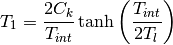
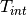
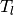
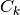
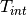
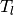
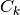

relaxation – Implementation of spin-lattice relaxation algorithms¶
At the moment, the Relaxation module allows for the evaluation of a spin-lattice relaxing system with a given spin temperature, lattice temperature, spin-lattice relaxation time and half-life. A callable function can also be given which is evaluated in time, and represents the implantation or generation of nuclei in the spin-lattice system. The relaxation process is being modeled by using Korringa [SS89] relaxation.
Usage examples¶
In the following example, the simulator is set to a lattice temperature higher than the spin temperature. The dependency on the spin-lattice relaxation is shown by different contour lines, and the effect of the pulse delay is also demonstrated.
from satlas.relaxation import KorringaRelaxation
from satlas.utilities import ReleaseCurve
from matplotlib import cm
import matplotlib.pyplot as plt
import numpy as np
import seaborn
seaborn.set_style('ticks')
seaborn.set_palette('colorblind')
# Needed for interaction temperature
g = 0.4213
Bfield = 1000.0 # Gauss
mu_N = 0.762259372 # kHz/gauss
k_B = 8.6173324 * 0.00001 # eV/K (Boltzmann constant)
h = 4.13567 * (10 ** (-15)) # eV/s
# Parameters for simulator and release curve setup
t1_2 = 1.77
I = 1.5
Tint = h * g * Bfield * mu_N * 1000 / k_B # interaction temparture
T = 20.0
pulsedelay = 2.0
# Create a release curve
RC = ReleaseCurve(delay=pulsedelay)
# Create the simulator
simulator = KorringaRelaxation(I, t1_2, T, Tint, 1.0, implant=RC)
# Select the time to simulate
t = np.linspace(0, 20 * t1_2, 2000)
# Select a range of spin-lattice relaxation times
T1 = np.linspace(0.1, 3.4, 21)
# Preallocate the solutions array
sol = np.zeros((T1.shape[0], t.shape[0]))
# Simulate the system for each value of the spin-lattice relaxation time.
# Save the polarization and activity in function of time.
for i, entry in enumerate(T1):
simulator.T1 = entry
sol[i, :], pops = simulator.Simulate(t)
# Trick to give a range of colors with a colorbar instead of seperate legend entries.
t_temp, T1_temp = np.meshgrid(t, T1)
ticks = np.linspace(T1.min(), T1.max(), 21)
fig = plt.figure()
ax = fig.add_subplot(2, 1, 2)
cf = ax.contourf(t_temp, sol, T1_temp, ticks, cmap=cm.spectral)
ax.cla()
# Plot different contour lines, corresponding with the ticks of the colorbar.
ax.contour(t_temp, sol, T1_temp, ticks, cmap=cm.spectral, linewidths=2.0)
cbar = fig.colorbar(cf, ticks=ticks[::4], orientation='vertical')
cbar.set_label('T$_1$ [s]', fontsize=16)
ax.set_xlabel('Time [s]', fontsize=16)
ax.set_ylabel('Polarization [%]', fontsize=16)
ax.set_title('Pulse delay {:.3g} s'.format(pulsedelay), fontsize=18)
ax.tick_params(labelsize=14)
ax.grid(True, alpha=0.4)
# Add in the expected activity.
ax2 = fig.add_subplot(2, 1, 1)
ax2.semilogy(t, pops, lw=2)
ax2.set_xlabel('Time [s]', fontsize=16)
ax2.set_ylabel('Activity [Hz]', fontsize=16)
ax2.set_title('Expected activity', fontsize=18)
ax2.tick_params(labelsize=14)
ax2.grid(True, alpha=0.4)
seaborn.despine(ax=ax, offset=10, trim=False)
seaborn.despine(ax=ax2, offset=10, trim=False)
plt.tight_layout()
plt.show()
(Source code, png, hires.png, pdf)
{kind=link}
{kind=link}
Code documentation¶
Module author: Wouter Gins <wouter.gins@fys.kuleuven.be>
Module author: Hanne Heylen <hanne.heylen@fys.kuleuven.be>
- class satlas.relaxation.KorringaRelaxation(I, t1_2, Tl, Tint, T1, implant=None)[source]¶
Class to evaluate the Korringa relaxation of a system.
Parameters: - I (integer or half-integer) – Nuclear spin.
- t1_2 (float) – Half-life of the nucleus in seconds.
- Tl (float) – Lattice temperature in Kelvin.
- Tint (float) – Interaction temperature for equidistant splitting, in Kelvin.
- T1 (float) – Spin-lattice relaxation rate in seconds.
Other Parameters: implant (callable, optional) – If implantation has to be taken into account, give a callable defining the number of implanted nuclei as a function of time.
Raises: TypeError – When implant is not a callable.
- Ck¶
float
Calculated Korringa constant using

If the relaxation time
 , the interaction temperature
 or the lattice temperature  are changed,
 is recalculated.
, the interaction temperature
 or the lattice temperature  are changed,
 is recalculated.
- source¶
array_like
Distribution of the implanted nuclei in the different
 states. Defaults to equal populations in all states.
states. Defaults to equal populations in all states.
- initial¶
array_like
Initial distribution in the
states.
- Simulate(t, pol=True, activity=True)[source]¶
Takes the timevector t and simulates the activity and polarization at these times.
Parameters: t (array_like) – Monotonically increasing sequence of times, needed for input in scipy.integrate.odeint().
Other Parameters: - pol (boolean, optional) – Boolean to check if the user is interested in the polarization.
- activity (boolean, optional) – Boolean to check if the user is interested in the activity.
Returns: tuple – The first entry is the polarization, second entry is the activity. If the polarization or activity is not requested, this vector is replaced by the value None.
Return type: array_likes